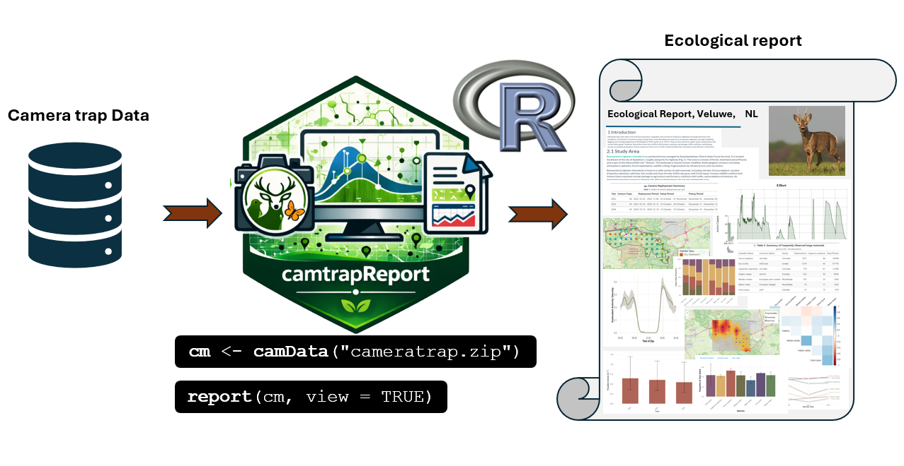

Purpose of the Ecological Report
The Ecological Report is the main interpretive output of
camtrapReport. It brings processed camera-trap data
together into a clear, scientific-style report with narrative text,
tables, figures, and maps. The report summarises key information on
study context, sampling effort, species detections, activity patterns,
spatial patterns, and ecological trends. It provides a reproducible and
modular workflow that automates much of the reporting process, helping
researchers, conservation practitioners, and camera-trap users analyse,
interpret, and communicate camera-trap data efficiently for conservation
planning and decision-making.

Figure 1. Workflow for generating an Ecological Report from camera-trap data using camtrapReport.
Figure 1 summarises the main workflow for generating an Ecological
Report with camtrapReport. Camera-trap data are first
loaded with camData(), creating an object that supports
data preprocessing, manipulation, analysis, summarisation, and
visualisation. This processed object is then passed to the
report() function, which generates a complete HTML
Ecological Report.
library(camtrapReport)
# Load camera-trap data
cm <- camData("cameratrap.zip")
# Generate the Ecological Report
report(cm, view = TRUE)Example Ecological Reports
Below are example Ecological Reports generated with
camtrapReport for different camera-trap monitoring
projects. Click on an image to open the full HTML report.
Customising the Ecological Report
After the camera-trap data have been loaded with
camData(), the resulting camReport object can
be customised before generating the final Ecological Report. Users can
adjust the report metadata, select the focal species group, define the
monitoring period, apply filters, and control which report modules are
included. These options allow the report to be tailored to different
monitoring projects, study designs, and research aims.
Viewing and changing metadata
The contents of the camReport object are extracted or
inferred from the main camera-trap dataset. These metadata can be viewed
and modified using the info() function.
Use info(cm) to see all available metadata fields.
Specific fields, such as the report title, subtitle, authors, institute,
site name, or logo path, can also be retrieved individually. If needed,
these fields can be updated before generating the final report using the
following steps:
# View all available metadata fields
info(cm)
# Retrieve specific metadata fields
info(cm, name = "title")
info(cm, name = "subtitle")
info(cm, name = "authors")
info(cm, name = "institute")
info(cm, name = "siteName")
info(cm, name = "logoPath")
# Update metadata fields
info(cm, name = "title") <- "Camera-Trap Monitoring Report: Hoge Veluwe National Park, the Netherlands"
info(cm, name = "subtitle") <- "Ecological insights from long-term camera-trap data"
info(cm, name = "authors") <- c("Elham Ebrahimi", "Patrick Jansen")
info(cm, name = "institute") <- "Utrecht University, the Netherlands"
info(cm, name = "siteName") <- "Hoge Veluwe National Park"
# Optional: add an institute or project logo
info(cm, name = "logoPath") <- "path_to_logo/UU_logo.png"
# Check the updated metadata
info(cm)Adjusting the focus group
The Ecological Report can be generated for a selected group of
species, referred to as the focus_group. This allows users
to focus the report on a particular taxonomic or ecological group, such
as large_mammals, wild_mammals,
wild_animals, birds, amphibians,
domestic, or a custom-defined group.
Users can also define a new group by assigning records based on one
or more fields, including scientificName,
class, order, and
observationType.
# Check the current focus group
cm$setting$focus_groups
# View available group definitions
names(cm$group_definition)
# Change the focus group
cm$set_focus_group(x = "birds")
# Re-run setup after changing the focus group
cm$setup()
# Inspect the rules used to define existing groups
cm$get_group("large_mammals")
cm$get_group("wild_mammals")
cm$get_group("wild_animals")
cm$get_group("birds")
cm$get_group("amphibians")A custom focus group can also be created when users want to focus on a specific set of species or records. Before defining a new group, it is useful to check the species table to see which species are available in the dataset.
# Check the list of species available in the dataset
cm$data_status$Species$Table
# Add a new custom group
cm$add_group(
name = "target_species",
x = list(
scientificName = c(
"Vulpes vulpes",
"Capreolus capreolus",
"Sus scrofa"
)
)
)
# Use the new group as the focus group
cm$set_focus_group(x = "target_species")
# Re-run setup after changing group definitions and focus group
cm$setup()
# Check the updated focus group
cm$setting$focus_groupsSelecting years and adjusting filters
Reports can be generated for all available years in the dataset or for a selected monitoring period. This is useful when users want to focus on a specific time window, such as a single monitoring year or a multi-year period. The count filter can also be adjusted to control the minimum number of observations required for a species to be included in the report.
# Check which years are available in the dataset
cm$extractYears()
# Select a specific monitoring period
cm$years <- 2023:2024
# Re-run setup after changing the selected years
cm$setup()
# Check the current count filter
cm$filterCount
# Change the minimum number of observations required
cm$filterCount <- 10
# Generate the report using the selected years and filter settings
report(cm, view = TRUE)Selecting which sections are included
Users can also control which sections are included in the final report. This is useful when a shorter report is needed, or when some analyses are not relevant for a particular dataset.
# View the sections currently available
listReportSections(cm)
# Show all section names
section_names()
# Exclude one section
section_names(exclude = "introduction")
# Exclude multiple sections
section_names(exclude = c("acknowledgements", "appendix"))
# Keep only selected sections
section_names(
keep = c("introduction", "methods", "study_area")
)
# Example: include all sections except richness and co-occurrence
selected_sections <- section_names(
exclude = c("richness", "co_occurrence")
)
# Check the selected section names
selected_sections
# Apply selected sections to the camReport object
sections(cm, selected_sections)
# Generate the customised report
report(cm, view = TRUE)
# Restore all available sections
sections(cm, n = section_names())Together, these options allow users to generate Ecological Reports that are reproducible, flexible, and tailored to the aims of each camera-trap monitoring project.